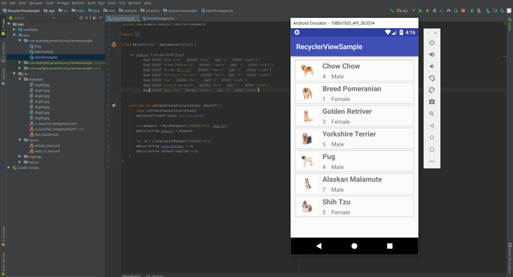

[과정소개]
[과정소개]
본 훈련과정은 모바일 네이티브앱 제작 및 하이브리드앱과 웹 응용소프트웨어를 제작하는 기술을 습득하여 해당 직종의 산업체에서 즉시 해당업무를 수행할 수 있도록 하는데 그 목적을 두고 훈련을 실시하고자 합니다. 이를 위해 응용 프로그래밍 언어를 학습하여 각 업무에 맞는 소프트웨어의 기능에 관한 설계, 구현 및 테스트를 수행하고, 사용자에게 배포하며, 버전관리를 통해 제품의 성능을 향상시키고, 서비스를 개선하는 업무에 종사할 수 있는 기술능력을 함양하도록 합니다. 또한 하이브리드 앱 및 웹 응용소프트웨어의 UI구현을 위해 UI 설계 산출물과 GUI 디자인 가이드를 바탕으로 UI구현 표준을 수립하고 UI를 제작하는 능력을 함양합니다. 더불어 모바일 기기의 폭발적 보급으로 인해 모바일 환경의 앱 개발 수요가 매우 높기에 모바일 기기에 적합한 콘텐츠 앱을 기획하고, 제작하고, 관리하는 업무에 종사할 수 있는 기술능력을 함양하며 이를 융․복합할 수 있는 기술 능력을 습득합니다. 이를 바탕으로 소프트웨어 개발업체, 시스템 통합 및 구축업체, 기업 전산실, 웹 및 앱개발 기업으로 취업할 수 있도록 합니다.

[훈련강점]
본 훈련과정은 산업체의 요구가 꾸준하며 앞으로도 인력채용 수요가 높을 것으로 전망되는 모바일 앱&하이브리드 앱 개발기술과 웹 응용SW개발 기술을 융․복합한 과정으로서 과정개발을 위해 본 교육원과 산학협력관계를 유지하고 있는 업체를 대상으로 한 수요조사 결과와 취업포털사이트의 채용공고를 분석하여 산업체에 투입되었을 때 즉시 담당업무를 수행할 수 있는 기술능력을 NCS(직무능력표준)에 의거하여 선정 및 설계하였습니다. 산업체의 인력수요 바로미터인 취업사이트의 구인공고를 보면 본 훈련과정의 훈련 이수 후 취업하게 될 직종인 웹 응용소프트웨어직군에서 PHP개발자가 매일 950건 이상 공고되고 있으며 모바일 앱&하이브리드 앱 개발자 또한 700건, 이 둘을 모두 사용하는 직군에서 1000건 이상 공고되고 있습니다. 이를 통해 본 훈련과정의 과정설계가 산업체에서 요구하는 인력수요에 타당하다는 것을 알 수 있습니다. 또한, 2015~2016년도에 당 훈련과정과 동일 능력단위 및 유사 능력단위로 설계된 훈련과정을 운영하면서 훈련생을 모집하는 과정에서 23명 정원에 매 과정 당 평균 100여명 이상의 훈련참여희망자들이 접수하였습니다. 이를 통해 본 훈련과정의 훈련희망 인력수요도 타 훈련과정에 비해 월등히 높다는 것을 알 수 있었습니다. 본 훈련과정의 경우 미래창조과학부의 K-ICT 9대 전략사업의 하나로 5500억의 예산을 편성하여 적극 지원하고 있는 직종이기에 산업 생태계도 안정적으로 발전될 것으로 보여 집니다. 산업체의 수요와 훈련을 통한 인력공급이 적절한 과정이므로 직업교육의 훈련목표에 가장 부합되는 훈련과정이라 판단됩니다.

[교육내용]
- 기초 프로그래밍언어
- 객체지향프로그래밍
- 응용소프트웨어 개발기초
- 응용소프트웨어구현 테스트 및 배포
- 안드로이드 네이티브 앱 제작
- 머티리얼 적용 앱 제작 및 배포
- 웹UI구현
- 웹프로그래밍

[수료후진로]
- 정보통신관련 관리자
- 컴퓨터 하드웨어 기술자 및 연구원
- 통신공학 기술자 및 연구원
- 컴퓨터 시스템설계 및 분석가
- 네트워크 시스템 개발자
- 컴퓨터 보안 전문가
- 시스템 소프트웨어 개발자
- 응용소프트웨어 개발자
- 웹 개발자
- 웹 및 멀티미디어 기획자
- 데이터베이스 개발자
- 정보시스템 운영자

[관련자격증]
- 기술사 ( 정보관리/컴퓨터시스템응용/정보통신 )
- 기사 ( 정보처리/전자계산기조직응용/정보통신/정보보안 )
- 산업기사 ( 정보처리/사무자동화/정보통신/정보보안 )
- 기술지도사
- 데이터아키텍처전문가
- 정보시스템감리사
- 정보보호전문가
- PC활용능력평가 시험
- 정보시스템 감리사
- 리눅스 마스터
- 인터넷 정보 관리사
- 디지털 정보 활용 능력 (DIAT)
- 컴퓨터 운용사
- PC 정비사
- 정보기술자격시험(ITQ)
- PC Master (정비사)
- 정보기술 프로젝트 관리 전문가(IT-PMP)


위 내용은 미래능력개발교육원 홈페이지를 참고하여 작성하였습니다.
미래능력개발교육원 홈페이지로 가기